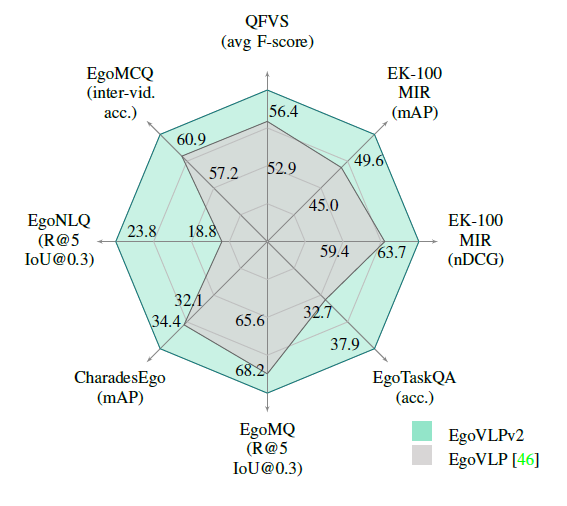
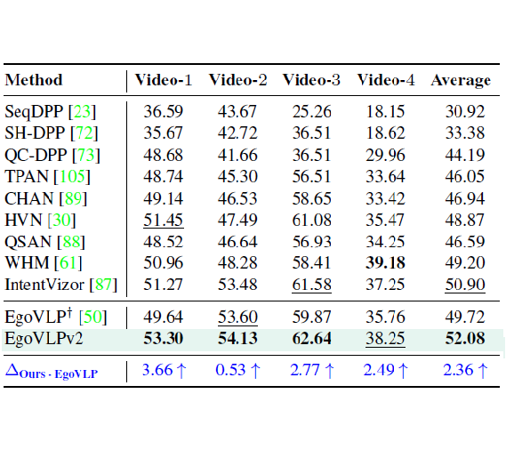
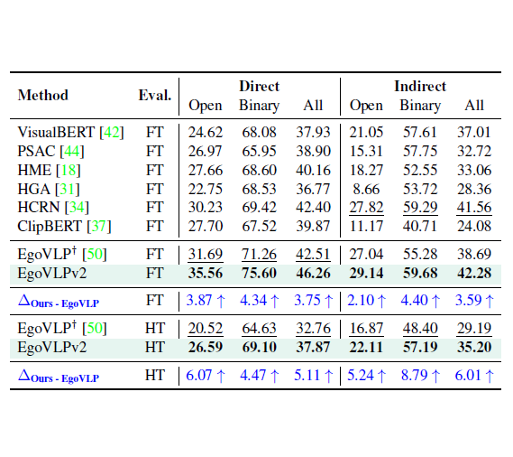
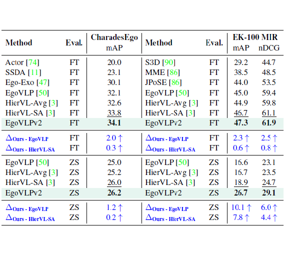

Radar Plot

EgoMCQ, EgoNLQ, EgoMQ

QFVS

EgoTaskQA

CharadesEgo, EPIC

We introduce the second generation of egocentric video-language pre-training (EgoVLPv2), a significant improvement from the previous generation, by incorporating cross-modal fusion directly into the video and language backbones.
Computation of three objectives, LEgoNCE, LMLM, and LVTM. We insert cross-modal fusion into uni-modal backbones with a gating mechanism. During pre-training, every forward iteration contains three steps: (i) cross-attention modules are switched off, EgoVLPv2 acts as dual encoder, LEgoNCE is computed. (ii) cross-attention is switched on, EgoVLPv2 acts as fusion encoder, and video-masked narration pair is fed into EgoVLPv2 to compute LMLM (iii) crossattention is kept on, hard-negative video-narration pairs are fed into EgoVLPv2 to compute LVTM. This fusion in the backbone strategy results in a lightweight and flexible model compared to using fusion-specific transformer layers.
Video-language pre-training (VLP) has become increasingly important due to its ability to generalize to various vision and language tasks. However, existing egocentric VLP frameworks utilize separate video and language encoders and learn task-specific cross-modal information only during fine-tuning, limiting the development of a unified system.
In this work, we introduce the second generation of egocentric video-language pre-training (EgoVLPv2), a significant improvement from the previous generation, by incorporating cross-modal fusion directly into the video and language backbones. EgoVLPv2 learns strong video-text representation during pre-training and reuses the cross-modal attention modules to support different downstream tasks in a flexible and efficient manner, reducing fine-tuning costs. Moreover, our proposed fusion in the backbone strategy is more lightweight and compute-efficient than stacking additional fusion-specific layers.
Extensive experiments on a wide range of VL tasks demonstrate the effectiveness of EgoVLPv2 by achieving consistent state-of-the-art performance over strong baselines across all downstream.
Radar Plot
EgoMCQ, EgoNLQ, EgoMQ
QFVS
EgoTaskQA
CharadesEgo, EPIC


TBD